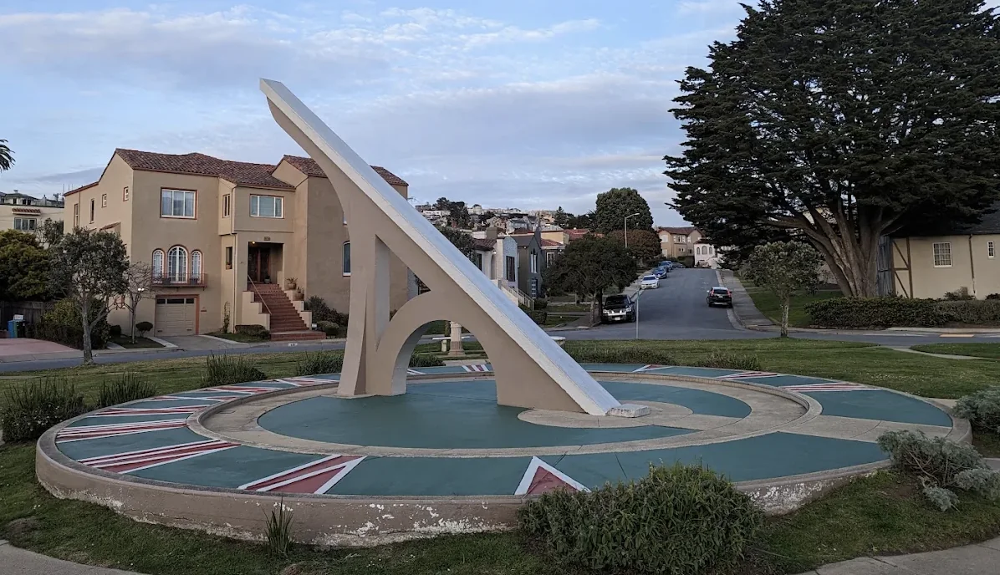
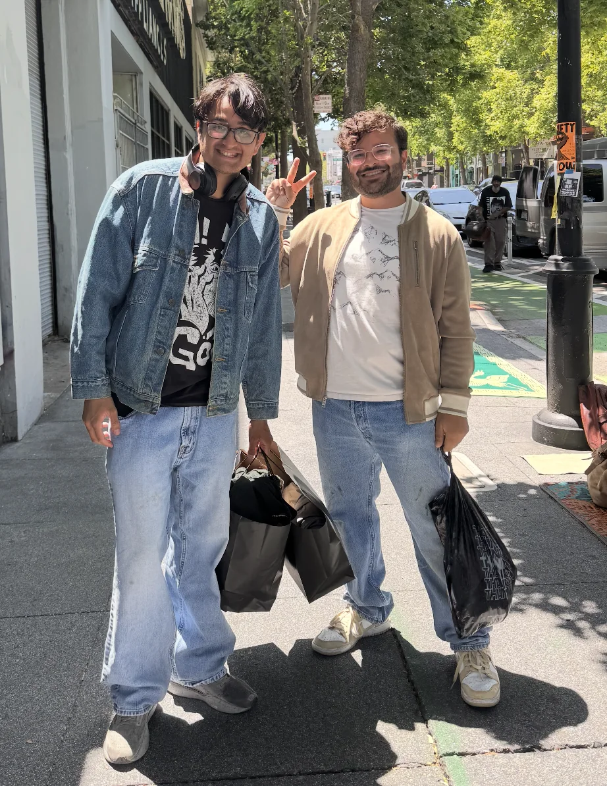
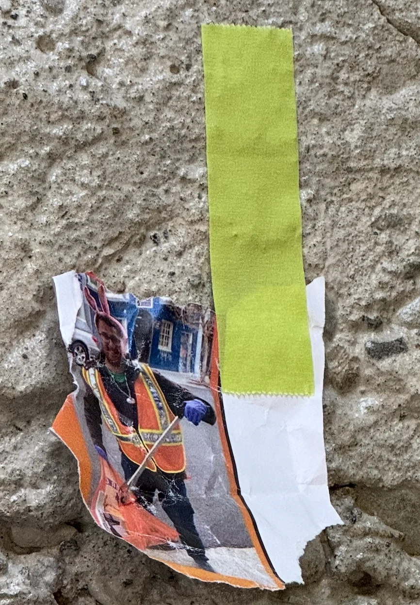

I made a character list detailing every character here. I got some feedback it can be hard to keep track. Let me know if this helps!
Previous newsletters
If you want to see any of the previous newsletters look here
Shoutouts
Have a couple folks I want to shout out this week! First is for “Olives” for going for what she wants and moving to N.Y! I will definitely miss you but really excited for all the cool stuff you’re gonna do in The Big Apple! When you come back in August we are doing karaoke and you’re gonna hear me do Rap God and WAP.
The next is for “The Doctor”! Best of luck in Austria with your interview. We all know this will be the one and you will finally become “The Professor”. And enjoy you’re well earned trip across Europe!
Monday
Today I took the day off from work due to being under the weather. Didn’t do much except rewatch T.V
Tuesday
See Monday
Wednesday
Today I finally had some energy in me so I started to work from home. After work I got dinner with “La Tacuqeria Royalty” over at The Laundromat. Every Wednesday they have a smash burger. Heads up the line is pretty long. We wound up waiting for half an hour. The burger was pretty good (the fact I ate it of course means I can’t review it). But I’m glad I did it though. And it was my first time hanging with “La Tacuqeria Royalty” 1:1. He’s a super cool guy, very down to earth and someone I think I vibe with more than I initially would have thought. I need to start hanging out with him more. He’s also very into One Piece! I think theres a handful of other folks reading this who are but its always cool to find another!
Thursday
Today I have even more energy so I do even more work but still from home. After work I go over to “The Doctor”’s place and play some games. Since he’ll be leaving for 2 weeks we all wanna wish him luck and eat his salmon (or in my case his shrimp). Nothing particularly notable here but its a great time as always.
Friday
Today I finally have the energy to go the office. The hardest part was explaining to the guy at MIXT why he hadn’t seen me all week since I usually pick up the office lunch orders. Other than that the day is fine.
After work I go to poker night hosted by “Fortnite mocap dancer”. Unfortunately I can’t stay for too long this time so I only get a few rounds in. Here I decide to go the entire time without looking at my cards and raise the stakes dramatically. Unlike last time I win absolutely nothing but thats fine I expected as much. I did enjoy seeing the look on peoples faces when I raised the stakes from 10 cents to a dollar. And to my credit I did *almost* win 1 of the 3 rounds. “Mr. Socksessfull” did quite well though winning $36 dollars. I do learn that someone else here is Yelp Elite so once I get to my 20 Yelp reviews I may also ask this person to nominate me as well to increase my odds.
From there I go to a North beach bar crawl hosted by “The Politician”. We start out over at a small place called Nik’s cafe. Its nice at first but as the soon to be 100+ crawlers start to swarm in we quickly outgrow it. Here though I do have some nice conversations with “The Writer”, “The Fisherman”, and others.
The second bar we go to called The Savoy Tivoloi is absolute peak though. Of all the bars I’ve been to for the “The Politician”’s bar crawls this one was my absolute favorite. For one thing there was easily enough space for people to talk and there was excellent music with a live band up front. Here I ran into an old coworker of mine who told me that things at Snorkel AI were actually doing pretty well. For the sake of my equity I hope he is right. Me and “The Fisherman” really go out on dancing when the live band plays “Pink Pony Club”, and “Mr. Brightside”.
After this bar we go to “Tupelo”. To be honest the vibes here weren’t as good as they were at The Savoy Tivoloi. The main part was a space issue. It was too densely packed to really have good conversations at. I think it would be an ok bar if you just want to dance but I already danced quite a bit at The Savoy Tivoloi so at this point I decided to just head home. It was definitely quite fun overall though!
“Olives” also comes through at the bar crawl so I see her for the last time before she moves to N.Y which was a nice touch. Bye Olives you will be missed!
Saturday
The day begins with trash pickup as per usual. Nothing particularly crazy here but good to see lots of people like “The Ravenkeeper”, “The Fisherman”, “The Writer”, “The Politician”, and others.
Afterwards I meet up with “The Shadow Brigade” and we go on a walk from South Mission through Balboa Park, Ingleside, Ingleside Terraces, Lakeside, and finally Stonestown. I picked this route mainly because I hadn’t actually seen a lot of these random neighborhoods in the South west part of the city. Ultimately I can’t say they’re amazing but for residential neighborhoods they are at least somewhat nice. And now I can say I’ve seen more neighborhoods in the city so there is that. The coolest thing we saw on the walk was probably the Ingleside sundial which was the largest sundial in the world at the time it was built.

For whatever reason Balboa park was the most disappointing to me as I did expect it to be a somewhat interesting park as opposed to just a flat stretch of green but perhaps thats what I get for not really looking up any pictures before hand and just going on vibes.
While at Stonestown we go to fix “The Shadow Brigade”’s sunglasses over at The Sunglasses hut. On one of the chairs there they had a manual lying around for how to sell care kits for their sunglasses. They covered things like “What if people ask about it being expensive”, and “What if people already have one” and so on. Through this we learn that apparently you need to hydrate your sunglasses. I find one of the employees and feign interest in buying one of these kits and ask him a bunch of these questions to see how well he was able to memorize the answers here. Unfortunately the answer was not very and I did have to remind him of a couple of them. I guess its ok because on the front of the manual I learned that the training has to be done between 05/27-06/27 so I guess he still has a little bit to finish it up. Maybe I’ll come back after and see.
I wanted to get a picture of the manual to show here but unfortunately by the time I thought of it he took it back and wouldn’t let me take a picture of it.
After this I got dinner with one of my old coworkers over at my favorite AYCE KBBQ restaurant Kogi Gogi. The waiter at Kogi Gogi knows me well enough at this point that he jokingly ribbed me for not really ordering any sides as I focus mainly on the meat. It was great catching up him and learning about the cool stuff he is up to at Meta and complaining about some of the people we hated at our old job. Unfortunately my old coworker can’t eat quite as much meat as I can so it was up to me to finish the job. I did at least live up to the waiters other comment that I can eat quite a bit of meat.
The night ends with me going to a graduation party for one of my coworkers who we all call “The Chief Dog officer”. This was my first time really going to a party with a bunch of my coworkers and it was pretty fun! One of my coworkers’ boyfriend is quite the troll with the energy to match even someone like me. At one point he asks about the trash pickup I do / how I heard about it and when I give the answer “my Parole officer” he really presses me for details.
I spin up an elaborate story about how I went to prison in San Quentin followed by ADX Florence. Here there was a nice “family reunion” because I ran into my uncles who flew planes. Eventually I wind up escaping the prison by first getting a poster of a model and putting it in my cell and each night slowly drilling a hole behind the poster until the hole is big enough that I can escape through it. Unfortunately I don’t get to finish the story so I never got to explain how I would have a parole officer if I escaped prison but rest assured the explanation is quite splendiferous.
Some folks were planning to do karaoke and I really wanted to join but my throat was still a bit sore so I couldn’t sing. Which was a real shame because I know some of my coworkers wanted to hear me do W.A.P and Rap God and I very much wanted to deliver. Instead I just head home.
Sunday
Today starts with Trash pickup. For those who may be unaware the place I do trash pickup was vandalized as part of some Anti Zionist protests. I don’t really want to get political in my newsletter but seeing a place that I come every week get smashed up definitely made me angry. I owe quite a bit to the trash pickup in terms of the community I’ve gathered around me and I do see Mannys as a core symbol of the trash pickup so this struck me in a way these sort of things don’t usually. Thankfully Mannys was open and operational by the time of the trash pickup wit the caveat that some windows were boarded up.
Before we started picking up trash there was also a short speech by someone who experienced Anti Semetic violence over in the Marina a couple days ago. She mentioned that she heard someone saying “F the Jews” and she said she couldn’t let that slide and got into an argument with those folks which resulted in her getting shoved to the ground and her friend getting, in her own words, “the crap beaten out of him”. I definitely respect her courage for speaking out, and it makes me wonder what I would have done. Thankfully she seems ok now and I hope her friend is as well.
After this we get back to normal trash pickup which I think is good because in times like this we need to come together at a community and remember why we still have reasons to smile. Todays trash pickup turnout also doesn’t disappoint when we have “The Ghostbuster”, “The Raja of Rhythm”, “The Yogi”, “Fortnite mocap dancer”, and … “Olives”. I was quite surprised since I already thought she moved on to the great city across the coast but apparently she decided to push back her flight at the last minute because she got too wrapped up in some existing plans.
We make a spontaneous shopping trip to a pop on Valencia street where I get a new denim shirt and jacket

We then go to Arcana where I do my bit of asking the bartender to “take a picture of me” wherein I hand her a photo of me. She takes this and hangs it up on the wall at Arcana which I thought was pretty cool

at the end we head out and I say goodbye to “Olives” for realsies this time (as far as I know anyway). “Olives” if I find out you haven’t left yet I’m so rescinding that shoutout at the beginning.
I go fishing with “The Fisherman” over by Pier 3. We don’t really catch anything but some older Chinese dudes next to us catch two bass while we’re there. As someone who watches fishing more so just to hang out I’m not bothered by not catching anything as it's just fun to hang out on a nice day by the pier.
Since its Fathers day I get dinner with my Dad and my older sister over at Anatolian table. Its nice to catch up with them. My Dad asks me an interesting question “If your friends were to describe you in 3 words how would they do so?”. I think about this for a while and the answer I eventually come up with is “Outgoing”, “Funny”, “Approachable”. Shortly before this I actually see “The Raja of Rhythm” walking by across the street so I ask him and he in collaboration with “Fortnite Mocap dancer” and “The Ghostbuster” and someone else came up with the answer “Eccentric”, “Committed”, and “Thoughtful” which was honestly better than my answer. I ask my Dad and Sister the same question and my Dad says “Friendly”, “Approachable” and can’t quite come up with a 3rd word. My Sister says “Thoughtful”, “Extroverted”, and “Caring”.
Once dinner ends and my Dad and Sister go back home to Marin I catch up with “The Raja of Rhtyhm”, “Fortnite Mocap dancer”, and “The Ghostbuster” over at Senor Sisig and watch them eat which is as great a time as always. I learn here that Rhode Island is where The Conjuring house is which makes me kinda want to go there. I never thought I’d have a reason to want to go to Rhode Island but here we are. Afterwards I head home to write up the newsletter.